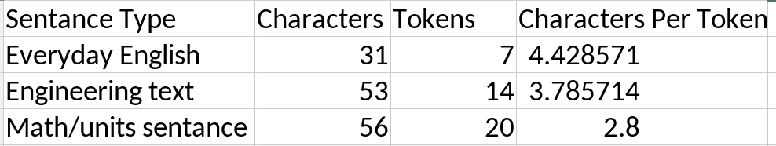

Between the three sentences, the characters per token decrease as the complexity increases. The engineering and mathematical sentences required more tokens to properly capture the context of the sentence. Simple English sentences require fewer tokens as the meaning is more straightforward.
The simple English sentences are the cheapest, requiring the least amount of tokens to capture the meaning of the sentence. The math sentence involving units and details is the most expensive. The more complex a sentence's meaning is, the more compute is required to handle it.
This is likely due to the requirement of finding small details in the sentence. The model must catch things like subscripts and/or code samples. This requires more tokens to fully understand the natural language relationships between characters/words.
["MSP", "430", "-F", "R", "233", "55"] which breaks the number identifier of the specific microcontroller into two tokens.
PID was kept as one token which will help with identifying the specific control system that is asked about.
MATLAB was not broken into two tokens which helps identify the specific programming language being used for the task.
I think these are two different examples of why tokens would not be split. The first, PID, is not split because it is short enough to carry the meaning more directly and not need further analysis. MATLAB, however, should not be split as this fits the role of a proper noun and splitting this token could cause the model to misinterpret the user's intentions.
Having technical terms not split in training data and seeing these tokens would increase the model's understanding of these token relationships. If the goal is to build a model that understands technical concepts, providing technical concepts as a single token can help focus more on the attention heads that find this token and the common relationships to this token.
Splitting key engineering terms that are commonly used into multiple tokens would increase the computational cost of running these prompts. This would also dilute the training of these specific tokens and their relationships to other tokens. This could decrease the performance of the model on these tokens.
Estimate the tokens in an engineering paragraph
Full report: - I did this wrong. I passed in the full report. Numbers are accurate to the report.
Can the entire report fit in the context window?
No, the entire report does not fit within the context window of an 8,000 token context window. Only about 80% of the report would fit in the context window of an 8,000 token model.
Approximate the cost to send one entire report to the model once.
This report would cost about 300.63.
Short reflection
The tokenization limits the amount of data that can be passed into a model to work on. Passing in more tokens than the context window allows will require the model to sample tokens and not process all of them. This can lead to the model missing data; the needle in a haystack test is used to benchmark these results. If this is used in engineering documentation, a specific number of units could be missed, resulting in documentation that is wrong or not useful.
Reducing model token usage while maintaining useful outputs could be achieved by decreasing the amount of documentation being provided to the model. Instead of providing the entire report or documentation, specific sections could be provided instead. Then piece these sections together into one cohesive document.
In the paper "Attention Is All You Need," the authors present a transformer network with the following parameters:
- Vocabulary size = 37,000 unique tokens
- dmodel = 512
- N = 6 (number of stacked encoder and decoder layers)
- h = 8 (number of heads)
- dk = dv = dmodel /h = 64
- dFF = 2048
- T = 512 (input token sequence length)
Based on this information, how many trainable weight parameters does the model have?